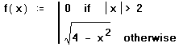

Error Messages in Numerical Calculations |
When Mathcad cannot properly evaluate an expression, it returns an error. Errors in a worksheet are highlighted in a different color (usually red), and clicking on the expression displays an error message.
Error messages can sometimes cover the part of the calculation in error. You can press [Esc] to close an error message or use the mouse to drag the message out of the way.
When displaying a 2D graph, Mathcad only plots the real value of each data point. If the expression you are plotting has no real result, the graph returns an error.
When using a fitting function, the vector of x values must contain at least two distinct values.
The array operation you're performing requires that some or all of the elements be of the same type, either scalars or strings:
When sorting an array, the column or row you are sorting on must contain either scalar or string values. You cannot sort on a row or column containing both.
When finding the maximum or minimum of an array, all of the array elements must be of the same type.
The indicated function definition contains an invalid list of arguments. A valid function definition begins like this:
function name (argument list) := ...
The argument list must be a name or a list of names separated by commas. Any other expression is illegal.
You see this error message if you create an invalid list in another context, for example, in the list of y-axis expressions for a plot.
You have attempted to perform an operation on a non-existent row or column.
When saving an array as a colormap, each row in the array corresponds to a different color. In order to vary a surface between two colors, the colormap must contain two rows of color data.
When using the 'Infinite Limit' integration method, at least one of the limits on the integral must be positive or negative infinity.
To change the integration routine to something other than 'Infinite Limit,' right-click on the integral and choose another routine from the menu.
The expression you have entered does not converge to a solution using the iterative solver you are applying. This message can be thrown by any operator or function which uses successive approximation, such as integration, regression functions, or other iterative methods, such as root finding. You can try better guess values, breaking the expression into different regions to avoid discontinuities, or reducing the value of TOL.
The algorithm for this differential equation solver did not find a solution. You can try changing your guess values for the unknown initial conditions, although there may be no solution for the boundary values you provided. You can also select another algorithm, which may converge to a solution.
Because of limitations in representing numbers in a computer, numbers that are too small cannot be represented. Sometimes, especially in a complicated calculation, the problem may lie with an intermediate result. When Mathcad encounters such a number, it returns an underflow error.
This function definition may contain too many nested functions. Or, if the function is defined in terms of itself, it may result in an infinite recursion. For example, if you define a function such as:
f(x):=f(x)+5
and evaluate it by typing:
f(10)=
this message appears.
To avoid this problem, be careful when redefining a function in terms of itself.
This function is undefined at zero.
ODE and PDE solvers try to return specific information about why they were unable to numerically solve your problem. These errors are caused by problems that are not formatted the way Mathcad expects or which are missing required information. See ODEsolve and command-line ODE solver Help for more information.
Sometimes the solver fails to converge on a solution. This happens when the difference between successive approximations to the solution is greater than TOL and:
The solver reaches a point where it cannot reduce the error any further.
The solver reaches a point from which there is no preferred direction, so the solver has no basis on which to make further iterations.
The solver reaches the limit of its accuracy. This may happen if you set TOL to a value below 10-15.
Make sure there really is a solution. Then try:
Raising the value of TOL.
Using a different guess value.
Adding an inequality to avoid an undesirable stopping point.
Changing the solving parameters or the solving method.
The worksheet cannot find the data file or other type of file you are referencing. Make sure the file exists in the location you've specified.
If you are using a function such as READPRN or WRITEPRN, make sure you typed the argument as a pathname to the data file.
You entered more than one array in the placeholder of a contour or surface plot. You can only have one array at a time in that placeholder because contour and surface plots can only represent a single surface at a time.
One of the arguments to a function or operator in the expression is a vector or matrix, instead of a scalar. You see this message if you try to divide one vector by another, since the division operator only works with scalars.
If you want to apply a function or operator to every element in a vector or matrix, use the vectorize operator.
You can only raise an expression with units to a real power. If you want to raise an expression with units to a complex power, you must use the SIUnitsOf function to cancel out the units.
You cannot have this many equations in a solve block. You can solve nonlinear systems of up to 200 variables and linear systems of up to 500 variables.
The file you are trying to access with READPRN does not have the required format:
The file must be ASCII with spaces or tabs separating the numbers.
All lines in the data file must have the same number of values if you are using READPRN. (Lines containing no values are ignored.)
If the file has the required format and you continue to see this error, try removing any text from the file.
You defined a range variable with a range that could not be understood. When you define a range, you must use one of the following forms:
Rvar := n1 ..n2
Rvar := n1,n2 ..n3
You can use at most one comma and one semicolon in the definition of a range for a range variable. If you use the second form, the value of n2 must lie between the values of n1 and n3, but cannot equal n1.
Range variables cannot be used within a solve block. If you want to iterate the solution to a solve block, define the output of the block as a function of one of the solve block parameters, such as a guess value, and use a range variable or program loop to iterate that function.
To unit balance an exponent, nth-root, or derivative equation, the units of the result must depend only on the units of the arguments, not on the numeric value of the arguments. Explicit (constant) values must be used to calculate the powers of a quantity with units. This means you cannot assign the exponent, radical, or order of the derivative with a function argument, or a variable name defined in the worksheet.
Since the units of the determinant of a matrix depend upon the size of the matrix, only unitless values are accepted here.
To preserve floating point accuracy in calculations with units, Mathcad restricts
exponents of united values to rational fraction with denominators no larger
than 60,000. The same rules applies in inverse to the radicals of nth roots.
Mathcad cannot determine the mode of this data. No single value occurs more frequently than any others.
Mathcad is unable to return the mode of the data because the data is multimodal. More than one value occurs at the highest frequency.
You tried to evaluate a function at a value outside its range of accuracy.
This error occurs in cases such as evaluating sin(10100). Since the value of sin(10100) depends on the ones digit of 10100, any value that comes back would have no significant digits. Instead of seeing a value of dubious accuracy, Mathcad returns an error.
The data you are attempting to graph represents a line, rather than a plane. Pass your data as an array, rather than a series of vectors.
Mathcad can only numerically evaluate derivatives up to 5th order. In order to evaluate a derivative of order greater than 5, you must do so symbolically.
A solution could not be found. If you're using a built-in function, check its documentation to make sure you are using the function correctly. It is possible, however, that no solution exists.
Results from some differential equation solvers require iteration. If, after many successive iterations, estimates still differ substantially, you'll see this error message. Try using different guess values.
The function has passed through as many iterations as possible trying to find a solution. If you see this message when using the polyroots function, the degree of the polynomial may be too high. Try solving for the roots symbolically.
The vector cross product is defined only for vectors having three elements.
The vector passed to the polyroots function must have at least two elements and no more than ninety-nine.
Mathcad does not allow time derivatives of second order or higher, or spatial derivatives of third order or higher, when solving a PDE.
Range variables that have units associated with the values in the range must have an explicit step size, specified by putting the second value in the range definition. This prevents ambiguity when using units that are different from the base unit in the current worksheet system.
Mathcad was not able to properly read in data from a data file. Check that you are not trying to read data points that do not exist in the file.
You are evaluating a function at a point that is not allowed. For example, the fifth argument to the relax function in Mathcad cannot have zeros in the non-boundary positions of the coefficient matrix.
This error occurs when your initial conditions do not match the expressions for functions in an ODE or PDE solve block. There may be too few or too many initial conditions, or the values specified may not match the functions.
Mathcad has encountered an error in your ODE solve block. This error may be due to one of several factors:
Your solve block specifies derivatives of more functions than there are equations: (n equations in fewer than n unknown functions).
Your constraints and initial conditions are insufficient or over-restrictive for the number of unknown functions. The number of conditions must be equal to the sum of the orders of the ODEs.
The solver was unable to interpret the system of ODEs. Check your function names, check that all functions are specified with the variable (x(t), not just x), check that all derivative initial conditions are given using prime notation [Ctrl] [F7], and that ODEs are linear in their highest-order derivatives. See the description of Odesolve for more details.
Because of limitations inherent in representing floating-point numbers with a computer, Mathcad cannot accurately sign floating-point numbers of magnitude greater than 10307. When an evaluation involves such a large number, even as an intermediate result, Mathcad returns this error message.
You evaluated a function or performed an operation at an illegal value. This error generally occurs when you either divide by zero or try to invert a singular matrix.
The most common causes of this error message are:
You failed to put a range variable on both sides of a definition involving ranges.
You entered a semicolon somewhere other than in a legal range definition. (The semicolon appears as two dots.)
You have attempted to compare two values which cannot be compared, such as a complex and a real number, or a scalar and a string. Mathcad's comparison operators require a comparison between two values of the same type.
The number of knots in this function are incorrect.
Unlike other spline interpolation functions, the Bspline function requires you to specify the knots — values where the polynomials fit together. This function does not have the correct number of knots given the number of individual piecewise polynomial fits specified.
The input vector cannot be constant. There must be at least two unique elements of the vector.
You are trying to use loess to interpolate on a value larger than the maximum value in your data set. You must interpolate for values that lie between your data points.
The argument to the svd function must be an m x n array, where m ≥ n.
This matrix must be neither singular nor nearly singular. A matrix is singular if its determinant is equal to zero. A matrix is nearly singular if it has a high condition number.
This error appears when the matrix argument to a function must be positive definite and it is not.
A matrix is positive definite only if all its eigenvalues are real, positive scalars. In the example below, R is positive definite but M is not.
This vector must contain all real elements. No complex or imaginary elements are allowed.
The input matrix for multigrid must be a square matrix with at least five rows and columns.
The first matrix argument in the cubic spline functions must have either one or two columns. Two columns are necessary for multivariate cubic spline interpolation.
This error marks a solving function such as Find or Odesolve with no matching 'Given.' A solve block must begin with a region containing only the word 'Given.'
There is not enough memory to complete this computation. Try to free up some memory by making the array or matrix smaller (approximately 8 bytes of memory are used per matrix element) or by deleting any large bitmaps, arrays, or matrices.
This value cannot be zero or a non-negative scalar. If you're using a built-in function, check its documentation for more information on its arguments.
Uniform polyhedra can only be graphed in a 3D surface plot. Use the 3D Plot Format dialog to change the Display As setting to "Surface Plot."
In certain situations, Mathcad places restrictions on the size or characteristics of an argument to a function. In this case, the array specified does not have a number of rows equal to 2n + 1.
This is a general error returned by Mathcad when the solve block is not properly constructed. Some causes of this error are:
Solve blocks use guess values to initially target the solver.
This error may occur if you define an array of guess values, and then call Find with an element of that array. You can only call Find with a scalar or array assigned to a guess value.
To determine a particular element of the solution array, solve for the entire array, then extract the desired element by using subscript notation, the column operator, or the submatrix function.
If you evaluate the solve block directly, instead of defining a function with it, a more specific error message appears.
When performing mixed integer programming (where you force a result to be an integer or a binary number), there must be as many characters in the string argument as there are variables being solved for. The characters must be either "I" for integer, "B" for binary, or "C" for any continuous real number.
Logarithms can only be calculated using a positive, real scalar for the base. The base you have specified is either not positive or not real.
The values in this vector must be in ascending order.
The first argument of lspline, pspline, cspline, linterp, and hist, as well as the second argument of interp, must be a vector whose elements are strictly increasing.
You cannot pass complex numbers to an Excel component. Use the Re function to remove the imaginary parts of any data you are passing to an Excel component.
Something other than a legally definable expression is on the left side of this definition. You can place any of the following on the left side of a definition:
A variable name.
A variable name with a subscript.
A variable name with a superscript.
An explicit vector or matrix created with the Matrix dialog. The vector or matrix can hold variable names or subscripted variable names only.
A function name with arguments, such as f(x,y).
Any other expression is illegal. If you want to compute a result instead of defining a variable, press =.
Some functions require an argument that is the result of another function. Even though this argument is just a vector, it must be in a special format that only another function can create.
For example, the first argument to interp must be a vector generated from a spline function.
With the bracketed version of the root function, the third and fourth arguments determine the interval over which Mathcad solves for a local root. When you use the bracketed form of root, the value of the function at the first bracket must be the opposite sign of the value at the second bracket. For example:
f(x):=sin(x+10)
x:=1
root(f(x),x,1,8)
gives an error because f(1) = -1 and f(8) = -.751. Try graphing the function to see where the root might lie and use values to the left and right as brackets. In the example above, you could evaluate over the interval [1,5] instead, since f(5) = .65.
The fitting function used requires a three-element vector of guess values, whose elements correspond to the coefficients a, b, and c of the model function.
This error marks a wavelet transform whose argument has the wrong number of elements. The argument must be a vector with 2n elements.
The polyhedron number code you specified does not match any known polyhedron.
When using either the Polyhedron or PolyLookup functions, you can specify a uniform polyhedron either by its name, number code, or Wythoff number. When specifying the number code, you must do so as a string, where the first character is '#'.
You entered an illegal expression in the placeholder at the end of a calculation equation. This placeholder requires real, non-zero, scalar values or expressions, or a function of a single variable with a defined inverse for scaling or affine unit transformations.
In Mathcad, commas are used to separate:
Function arguments.
The first two elements of a range variable definition.
Expressions in a plot.
Array subscripts.
Any other uses of a comma result in an error. For example, you cannot use commas in a number, such as 4,000. You should simply type 4000.
The fitting function does not have enough data points for the parameters specified. This error occurs in one of three cases:
With regress, the length of each data vector must be greater than the order of the fitting polynomial.
When using genfit, the length of each data vector must be greater than the length of the vector of guess values.
For linfit, the length of each data vector must be greater than the length of the function vector.
You can use the rows function to determine the length of a vector.
Localized polynomial regression with the loess function requires data vectors longer than three elements.
The array operation or function used requires arrays of specific dimension. Some examples of this include:
Matrix multiplication, which requires that the number of columns in the first matrix match the number of rows in the second.
The genvals function, which takes two arrays of identical size.
Check the documentation on the particular operator or function for any array size requirements.
This argument must be the name of a function, but it is not.
Certain functions in Mathcad require as input other functions. For example, the matrix function requires three arguments: the number of rows and columns for the resulting matrix, and the function used to determine the elements of the matrix.
Mathcad was expecting a value, but was provided something else, such as a function or a range variable. This error occurs, for example, if you create a definition that involves a range variable on the right side of the definition but the range variable does not appear on the left side. If you define p:=0..4 then f:=p+2 gives this error because the addition operator is expecting individual values, not a range. Instead define f(p):=p+2 or fp:= p + 2.
Some of the finance functions accept an optional argument, type, which specifies when a payment is made within the period. type can be either 0 or 1.
This expression references a vector or matrix with more than the allowable number of subscripts.
Mathcad only allows the use of two-dimensional arrays. To refer to the elements of a nested array, you must subscript the element containing the nested array, such as:
(M5,3)2,1
This expression uses a subscript or superscript that refers to a nonexistent array element. A valid subscript or superscript must be:
An integer.
No less than the value of ORIGIN in the worksheet.
No greater than the row or column number of the last element.
You performed an operation that requires a matrix. For example, when creating surface plots or contour plots, the array plotted must be a matrix, an array having at least two rows or two columns. Certain built-in functions also require matrix arguments.
The indicated ( is not matched by a balancing ). You must add a matching ) to complete the expression.
The operator placeholder in this expression is empty. You must insert an operator into the indicated placeholder before Mathcad can evaluate the expression in which it occurs.
This error generally occurs when you have deleted an operator.
The data file or other external file you are trying to import is not found or a data file you are trying to write to is read-only.
Make sure you've specified the path to the file correctly and that the file exists there. Also verify that the file is not read-only. Keep in mind that you must specify the full path to a file unless the file is located in the program folder.
A function with a variable number of arguments, such as mean or stdev, cannot be passed as an argument to another function. Define a new version of the function, such as
mean1(x):=mean(x)
and use the new version as your argument.
This function is not part of Mathcad, but rather is provided through optional add-on software called an extension pack. The particular extension pack Mathcad is attempting to use is indicated by the code at the end of the error message, which can be interpreted by Technical Support.
Mathcad licenses four extension packs for sale separate from Mathcad: Data Analysis, Image Processing, Signal Processing, and Wavelets. These extension packs are available for separate purchase from the Web Store.
To resolve this error, you must either purchase the proper extension pack, or use another function in your worksheet.
You attempted to evaluate an operator or a function at an inappropriate value. For example, ln(0) gives this error. So does -3!, since the factorial operator is undefined for negative numbers.
The UnitsOf function has been deprecated. It is still available in the SI Unit system, where it returns the same results as the SIUnitsOf function. Use the SIUnitsOf function going forward.
The image reading functions such as READ_IMAGE, READ_RED, etc. can only read files in BMP, JPEG, GIF, PCX, or TGA format.
This value is too large to work with. If you're using a built-in function, check its documentation for more information.
This value is too small to work with. If you're using a built-in function, check its documentation for more information.
When using a conditional statement, your program may not calculate properly if you do not anticipate all possible values on which the conditional depends. For example, the program below is valid only when x is 4 or 5. When x is any other value, the program does not specify what to do.
To correct this, you can add an otherwise statement:
You used a vector or ranged expression or another kind of expression where a scalar is required. Some functions require some or all of their arguments to be scalars only. Check the documentation on the function for more information.
Some functions require two arguments which indicate the beginning and end of an interval. The beginning value must be smaller than the end value.
For example, the runif function requires two arguments a and b, where a and b are the endpoints and a must be smaller than b.
You have attempted to use a disallowed construct within a solve block.
There may be a definition within this solve block. Variables within a solve block can only be defined using a Boolean equals sign.
Or, you may have created a nested solve block — two 'Given' statements with no intervening solving function. A solve block cannot contain another solve block. As an alternative, you can define a function in terms of one solve block and use it inside another solve block. In many cases, this has the same effect.
Some built-in functions require square matrices (matrices having an equal number of rows and columns). Check the documentation on the function for more information.
This expression contains a non-integer expression where an integer is required. The expression may have a fractional part.
Some possible places to look are:
Superscripts and subscripts
Arguments to certain functions such as the identity function or the submatrix function.
Note that although you can define range variables with fractional values, you cannot use these as subscripts or superscripts.
The fmap argument to CreateMesh or CreateSpace must be the name of a mapping function which determines the coordinate system. For example, you can use the coordinate mapping functions in this argument.
You performed an array operation on a scalar. For example, you cannot use the array column operator on a scalar.
For surface plots or contour plots, the array plotted must have at least two rows or two columns.
The function or operator you are using requires a single constant, a matrix, or a vector.
The function or operator you are using requires a string argument. For example, string functions usually require at least one string argument.
The payment interval you have specified is incorrect. This is likely due to one of the following reasons:
The starting period is greater than the ending period.
The starting period is greater than the total number of payments.
The ending period is greater than the total number of payments.
the payment period is greater than the total number of payments.
As a rule, Mathcad assumes that the number of payments to be made (nper) is correct, and marks an argument not in agreement with nper as incorrect. When editing your equation, make sure that you have not entered an incorrect number of payments.
The array subscript/superscript you tried to use exceeds the internal Mathcad limit. Due to issues with the representation of numbers on a computer, Mathcad does not allow you to use subscripts or superscripts greater than 16 million.
The fourth argument to bspline must be either 1, 2, or 3, indicating the degree of the individual piecewise polynomial fits used in the B-spline.
You are trying to perform a matrix operation on something other than a matrix. A matrix is an array consisting of more than one column.
The spatial and temporal endpoint arguments to numol and Pdesolve must be in the form of two-element column vectors.
This error marks a matrix or scalar in an operation that requires a vector (a one-column array), for example, with the vector sum operator.
You have specified an invalid number of gridpoints. The integer number of gridpoints in a 3D plot must be an integer greater than 1.
This value must be an odd integer. Check the documentation for the function for any limitations on its arguments.
If you're using a built-in function, check the documentation for the function for any limitations on its arguments.
This expression contains an imaginary or complex-valued expression someplace where it is not allowed, such as a subscript or superscript, a differential equation solver, or certain functions such as mod and angle.
This error marks a Fourier transform function whose argument has the wrong number of elements.
fft requires a vector with 2n elements.
ifft requires an argument vector with 2n+1 elements, where n is a whole number greater than 0.
Use cfft and icfft for arrays and vectors of any size.
When calculating the internal or modified internal rate of return for a series of payments, the vector of payments must contain at least one positive and one negative value.
The first argument of the loess function should be a real matrix having no more than 4 columns, each of which represents the data corresponding to a particular factor.
This error message marks a Fourier transform, cubic spline, or linear interpolation function applied to a vector with too few elements.
Splines and linear interpolation require vectors with at least two elements. Fourier transform functions and their inverses require at least four elements.
The built-in constant TOL is outside the allowable range. Redefine TOL to a value greater than 0 and less than or equal to 1.
You tried to plot more points than could be handled in one plot. Try keeping the number of points below 150,000.
Mathcad was unable to write to the data file. Check that the file exists in the specified location, and that it is not read-only.
You have attempted to create an X-Y or polar plot of more than 16 curves. Mathcad allows a maximum of 16 curves per 2D plot.
You have tried to evaluate an expression numerically when it must be evaluated symbolically.
In Mathcad, operators such as the indefinite integral and the limit operators can only be evaluated symbolically. When using one of these operators, you must evaluate the expression using either Live Symbolics or the appropriate option from the Symbolics menu.
You pressed [Esc] to halt a calculation. To recalculate the marked equation, put the cursor in the equation and choose Calculate > Calculate Now from the Tools menu, or press [F9].
If you want to recalculate the entire worksheet, choose Calculate > Calculate Worksheet from the Tools menu instead, or press [Ctrl] [F9].
If you find yourself frequently interrupting calculations to avoid having to wait to recalculate as you edit your worksheet, you may wish to switch to manual mode.
You are attempting to pass data to an Excel component without first mapping each input variable to a starting cell.
In order to send data from Mathcad to Excel via the Excel component, you must specify which cells in the spreadsheet correspond to each Mathcad variable. If this mapping is incomplete, Mathcad cannot properly exchange data with Excel.
Mathcad cannot make sense of this expression. Try entering it again.
This error occurs when Mathcad is unable to understand the expression you have written, but is unable to return a more specific error. Review the expression for potentially incorrect constructs, such as:
3% — Mathcad requires a multiplication operator between the 3 and the %.
sin(1..3) — Mathcad does not understand how to interpret a repeated decimal point.
You have not filled in the indicated placeholder. You must fill in the placeholder with a number or expression to complete it.
Mathcad was expecting the name of a function or variable at the indicated location, but found something else. For example, you may have entered something like:
45(x) := 4 — 45 is not a valid function name.
f(2) := 3 — 2 is not a valid variable name. You cannot define the value of a function at a particular point; you must specify a variable within the function's argument list.
You have attempted to use an otherwise statement without preceding if statement.
The otherwise operator, analagous to the else keyword in C++, is used to identify cases which fail a conditional test during execution, usually to set an alternate value for a variable. In any case, the otherwise statement only executes in conjunction with an if statement, such as:

In this case the program returns 0 for any value of x > 2 or x < −2. For values of x between −2 and 2, inclusive, the program instead returns the value of the square root.
You have used a break outside of a for or while loop.
break is designed to halt execution of a loop. Generally, break is used on the left side of an if statement, exiting the loop and resuming execution of the program with the statement immediately after the loop.
In the following example, break terminates the loop for values of x > 4 and moves to the next statement, which returns the current value of z.
You have used a continue outside of a for or while loop.
continue is designed to skip a particular iteration of a loop, resuming execution with the next iteration. Generally, continue is used on the left side of an if statement, skipping any remaining statements in the current iteration of the loop and resuming execution with the next iteration.
For example, here continue is used to create an array with data only in the even-numbered columns:
When j is even, continue causes calculation to immediately skip to the next iteration, so no values are written into columns 0 or 2.
The name of a range variable was expected at the indicated position.
If the expression contains either a summation or an iterated product, check to see that the index, located beneath the operator, is in fact a range variable defined in an previous region.
The name you have chosen is too long. You must pick a shorter name for this function or variable.
Mathcad only allows you to type a string of at most 1024 characters. To create a longer string, break it into 2 or more shorter strings and use the concat function to concatenate them.
The indicated numeric constant contains an invalid character. For example, if you accidentally type 2X you see this error.
You have specified a number greater than 10307. Mathcad cannot handle a number this large.
This variable or function is undefined. To define it, enter the name, followed by a colon (:) and the number or expression that defines it. Be sure to place the definition above those regions in the worksheet that depend upon it.
You also see this message if you use a variable incorrectly in a global definition. Variables occuring on the right hand side of a global definition must be globally defined above the definition.
This error often indicates an error in a definition further up in the worksheet. If this is the case, all dependent expressions display in red. You can use the Trace Error feature to locate the erroneous definition.
This function has 2 or more arguments with the same name. You must rename one of them.
This is a change in behavior from earlier versions of Mathcad. Previously, Mathcad would allow you to construct the function definition: f(x,x) := x + x. This is no longer allowed; Mathcad now requires the names of a function's arguments to be distinct.
Mathcad is unable to resolve the definition of this variable. This typically occurs when a variable and a function of the same name are used in the same expression. Use the namespace operator to resolve the definition, or rename a variable or function distinctly.
This error occurs when the expression on the left side of an on error statement returns a result with a different type or units than the expression on the right side.
Some examples of behavior that would cause this error are:
Returning a function on one side and a scalar or array on the other,
Results on one side carrying different units than results on the other side.
See the information on function type signatures if you need help reading the output of this message.
The name you used in an expression does not refer to a function; it refers to some other type of value.
In Mathcad, some functions require a function as input. For example, genfit requires the name of a fitting function, and the CreateSpace and CreateMesh functions require you to specify the name of a mapping function or functions.
The indicated expression applies a function to fewer arguments than the function actually requires. For example, you attempted to calculate csort(A), rather than csort(A, 3). Check the argument list in the documentation, or look at the function's type signature by typing the function name followed by =.
The indicated expression applies a function to more arguments than the function actually requires. For example, you attempted to calculate atan2(0,2,0)=. Check the argument list in the documentation, or look at the function's type signature by typing the function name followed by =.
The function or operator you're using expects a different type of value than the one you used.
Mathcad supports various types of data, such as scalars, range variables, vectors and matrices, strings, values with associated units, and nested arrays. Confirm in the documentation, or by using the function's type signature, that you've supplied the proper types of arguments. Type the name of the function followed by = to see the expected types. The type information in this message uses the following syntax:
This error message will result, for example, when
In this example, y and a are the guess values, carrying different units. The result is passed to a vector, whose individual elements carry the correct units.
This calculation contains a conditional branching expression, such as the if function, or the if or on error programming operators, whose result varies in type according to the branch taken during execution. Since Mathcad cannot determine which result is the correct one, it returns this error rather than possibly returning an incorrect result during evaluation.
A similar error occurs when an array or a 2D Plot contains different units or types in markers and axis limits. All the values must have matching units and types.
The call to this function is not consistent with its definition.
This error occurs in cases such as the following:
f(x) := f where f(x) evaluates as a function in terms of itself, but is not called with an argument recursively.
f(x) := x + f(1,2) f is defined as a function of one variable, x, but is invoked recursively with two parameters, 1 and 2.
f(x) := x + f(sin) f is defined as taking a value as an argument, but is called recursively with a function as its argument.
f ← f(i) inside a program, where f on the left is an uninitialized variable name, and f on the right is a function defined outside the program. After the first iteration on i, f has been redefined as a variable, and can no longer be called as a function.
The function no longer works in Mathcad. The following functions are no longer supported:
READ — Use READPRN instead.
WRITE — Use WRITEPRN instead.
APPEND — Use APPENDPRN instead.
UnitsOf — Only supported in the SI and None unit systems. The function name is deprecated. Use SIUnitsOf instead.